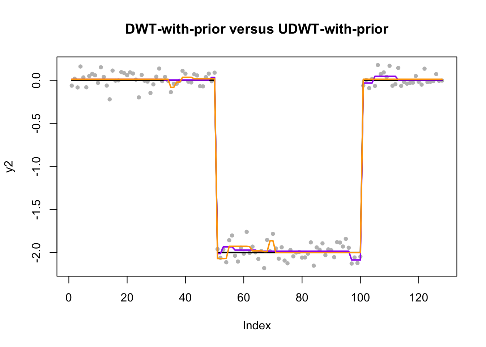
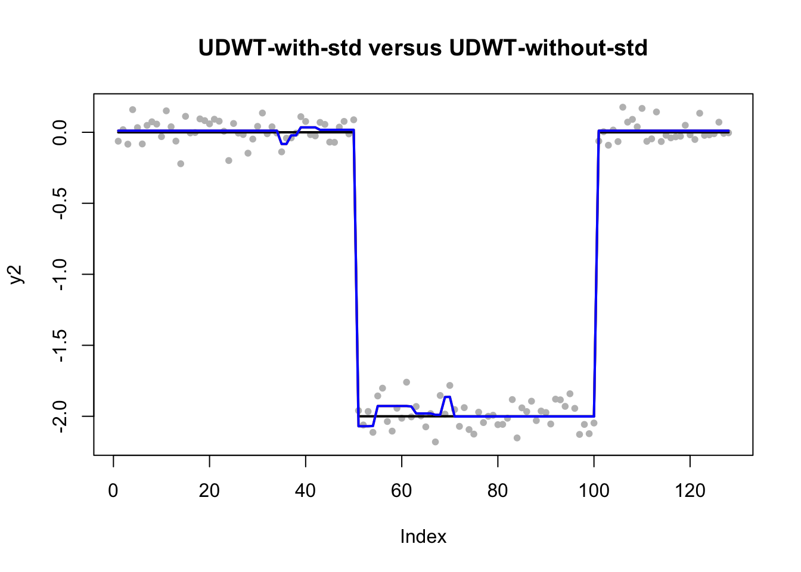

Last updated: 2019-01-21
workflowr checks: (Click a bullet for more information) ✔ R Markdown file: up-to-date
Great! Since the R Markdown file has been committed to the Git repository, you know the exact version of the code that produced these results.
✔ Environment: empty
Great job! The global environment was empty. Objects defined in the global environment can affect the analysis in your R Markdown file in unknown ways. For reproduciblity it’s best to always run the code in an empty environment.
✔ Seed:
set.seed(20190114)
The command set.seed(20190114) was run prior to running the code in the R Markdown file. Setting a seed ensures that any results that rely on randomness, e.g. subsampling or permutations, are reproducible.
✔ Session information: recorded
Great job! Recording the operating system, R version, and package versions is critical for reproducibility.
✔ Repository version: ca2f50d
wflow_publish or wflow_git_commit). workflowr only checks the R Markdown file, but you know if there are other scripts or data files that it depends on. Below is the status of the Git repository when the results were generated:
Ignored files:
Ignored: .DS_Store
Ignored: .Rhistory
Ignored: .Rproj.user/
Ignored: analysis/.DS_Store
Untracked files:
Untracked: docs/figure/wavelet-susie-20190121.Rmd/
Unstaged changes:
Modified: analysis/UDWT.Rmd
Deleted: analysis/UDWT2.Rmd
Start from simple, we simulate n=128 data points, whose underlying trend is piecewise constant. We also create corresponsding DWT and UDWT matrices. Notice that the dimension of DWT is 128 by 128, and that of UDWT is 128 by 897.
n <- 128
set.seed(1)
beta2 <- c(rep(0,50),rep(-2,50),rep(0,n-100))
y2 <- beta2 + rnorm(n, sd=0.1)
Haar_matrix <- t(GenW(n=n, filter.number=1, family="DaubExPhase"))
DWT_W_T <- t(Haar_matrix)
n_Haar_matrix_inv <- DWT_W_T
for(i in 1:(n-1)){
order <- shift(seq(n),i)
Haar_matrix_shifted_inv <- t(Haar_matrix[,order])
n_Haar_matrix_inv <- cbind(n_Haar_matrix_inv, Haar_matrix_shifted_inv) #Each column is a basis for sparse regression
}
duplicated_columns <- duplicated(t(n_Haar_matrix_inv))
UDWT_W_T <- n_Haar_matrix_inv[, !duplicated_columns]We perform SuSiE on DWT and UDWT bases. We also try the option of estimating prior variance. Further we also investigate the UDWT with and without standardization.
fit_susie_DWT <- susie(DWT_W_T, y2, L=10)
fit_susie_DWT_prior <- susie(DWT_W_T, y2, L=10, estimate_prior_variance=TRUE)fit_susie_UDWT <- susie(UDWT_W_T, y2, L=10)
fit_susie_UDWT_prior <- susie(UDWT_W_T, y2, L=10, estimate_prior_variance=TRUE)
fit_susie_UDWT_prior_nostd <- susie(UDWT_W_T, y2, L=10, estimate_prior_variance=TRUE, standardize=FALSE)The following figure shows the performance when using DWT and UDWT bases and we both estimate prior variance here. The purple line is DWT-with-prior, and the orange line is UDWT-with-prior. We cannot observe much difference from these two fits.
plot(y2,pch=20, col="grey", main="DWT-with-prior versus UDWT-with-prior")
lines(beta2,col="black",lwd=2)
lines(predict(fit_susie_DWT_prior), col='purple', lwd=2)
lines(predict(fit_susie_UDWT_prior), col='orange', lwd=2)
As suggested, we also apply UDWT bases with and without standardization. The blue line is UDWT without standardization and the orange line is UDWT with standardization. We oberve that the blue line is on top of the orange one. So there is no difference in the UDWT case with standardization or not.
plot(y2,pch=20, col="grey", main="UDWT-with-std versus UDWT-without-std")
lines(beta2,col="black",lwd=2)
lines(predict(fit_susie_UDWT_prior), col='orange', lwd=2)
lines(predict(fit_susie_UDWT_prior_nostd), col='blue', lwd=2)
sessionInfo()R version 3.4.3 (2017-11-30)
Platform: x86_64-apple-darwin15.6.0 (64-bit)
Running under: macOS Sierra 10.12.6
Matrix products: default
BLAS: /Library/Frameworks/R.framework/Versions/3.4/Resources/lib/libRblas.0.dylib
LAPACK: /Library/Frameworks/R.framework/Versions/3.4/Resources/lib/libRlapack.dylib
locale:
[1] en_US.UTF-8/en_US.UTF-8/en_US.UTF-8/C/en_US.UTF-8/en_US.UTF-8
attached base packages:
[1] stats graphics grDevices utils datasets methods base
other attached packages:
[1] susieR_0.6.4.0427 binhf_1.0-3 adlift_1.4-1
[4] EbayesThresh_1.4-12 wavethresh_4.6.8 MASS_7.3-51.1
loaded via a namespace (and not attached):
[1] Rcpp_1.0.0 knitr_1.21 whisker_0.3-2
[4] magrittr_1.5 workflowr_1.1.1 lattice_0.20-38
[7] stringr_1.3.1 tools_3.4.3 grid_3.4.3
[10] xfun_0.4 R.oo_1.22.0 git2r_0.24.0
[13] matrixStats_0.54.0 htmltools_0.3.6 yaml_2.2.0
[16] digest_0.6.18 rprojroot_1.3-2 Matrix_1.2-15
[19] R.utils_2.7.0 evaluate_0.12 rmarkdown_1.11
[22] stringi_1.2.4 compiler_3.4.3 backports_1.1.3
[25] R.methodsS3_1.7.1 This reproducible R Markdown analysis was created with workflowr 1.1.1